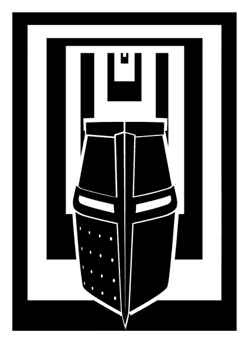

Chapter 1 - "Mr Dunworthy opened the door to the laboratory and his spectacles promptly steamed up."
Chapter 17 - "'An example of the macabre tomb decoration prevalent following the bubonic plague.' 'Isn't it apocalyptic?' Colin said delightedly."
Chapter 24 - "'The Prime Minister Has Left Us Here To Die.'"